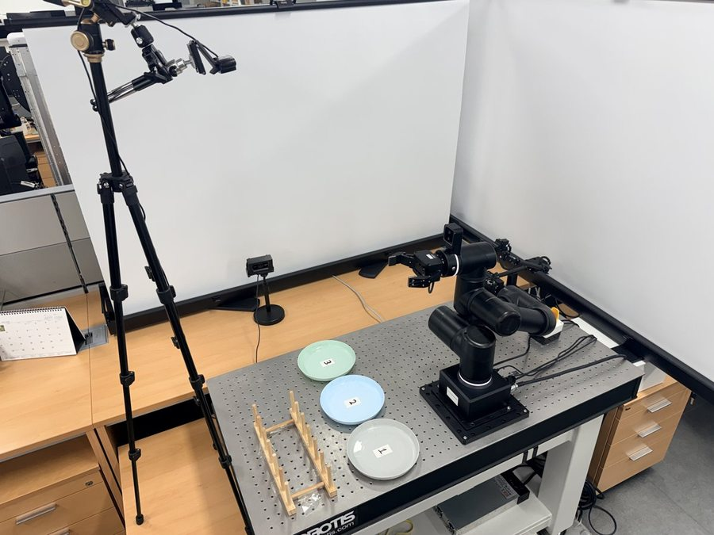
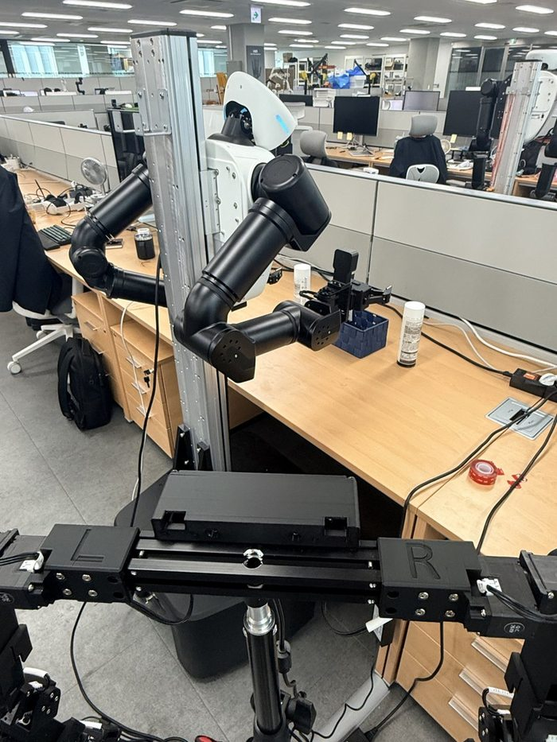
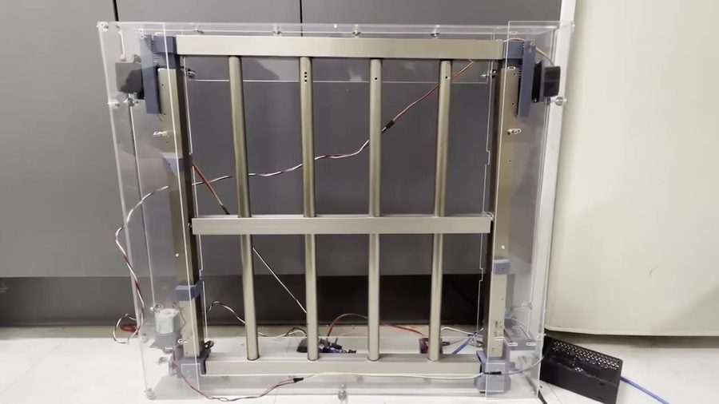
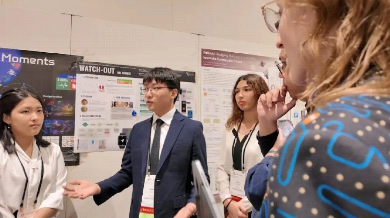

SOTA robot policies benchmarked on real arms at ROBOTIS · a new scene-prior imitation model · a parent-child RL algorithm · and a first-author adaptive processor. Physical AI, full stack.
Five state-of-the-art policies, one 6-DoF OpenManipulator-Y, and every engineering problem between a checkpoint and a working robot

I designed the task, collected the data (100 teleop episodes, 3 cameras), fine-tuned five 2026 frontier models on H100/A100 cloud GPUs, and evaluated them on the physical arm: GR00T N1.7 (NVIDIA), MolmoAct2 (Ai2), VLA-JEPA, FastWAM, and LingBot-VA.
A newly developed ACT variant: a frozen DINOv2 scene prior seeds the CVAE latent, steering the policy before it acts
On a drawer-manipulation study (OpenManipulator-X, 150 demonstrations, three drawers), I built and compared new policy architectures against vanilla ACT:
Pure imitation assumes the robot never makes mistakes. IGEN assumes it will — and learns from exactly those states.

A morphable RISC-V processor that reconfigures its pipeline depth at runtime, steered by an online-learned predictor
Pipeline depth is fixed at design time — but the optimal depth changes with the workload, and even between phases of one program. PDPM makes it a runtime variable.
A ConformerXL neural decoder translating brain activity into text (arXiv:2604.16441)
arXiv: 10.48550/arXiv.2604.16441
Eight months of end-to-end hardware engineering — from PCB layout to a product demonstrated at COEX 2025
From competition podiums to Seoul National University's robotics bootcamp
The physics grounding beneath the hardware
Award-winning systems built with my sister and collaborators


Prospective PhD student, Fall 2027 — computer architecture & systems.
dchun4748@gmail.com